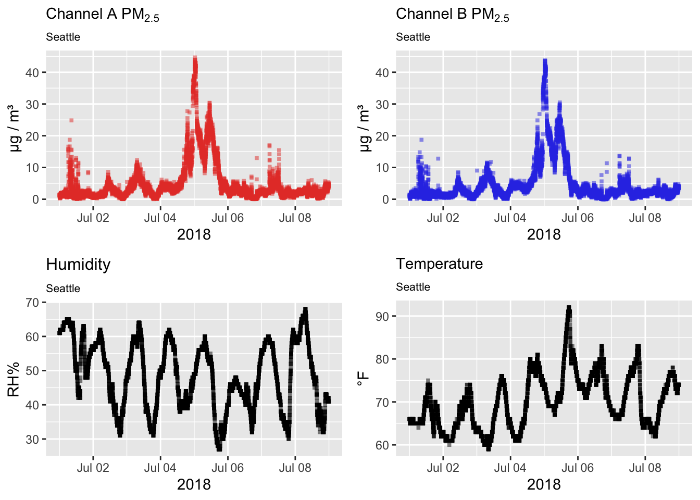
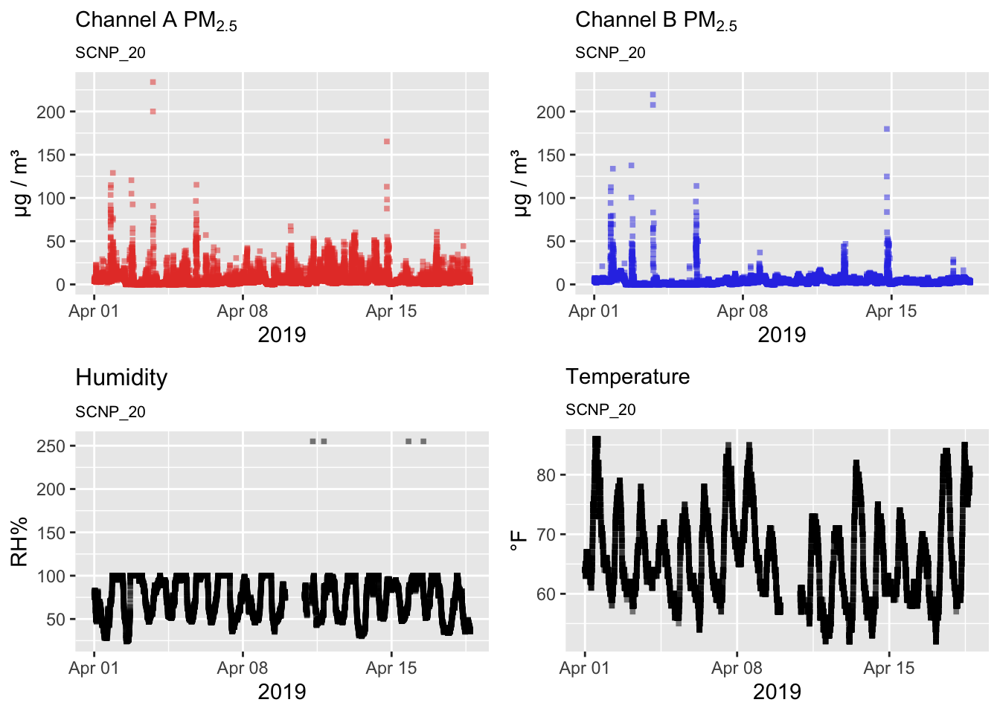
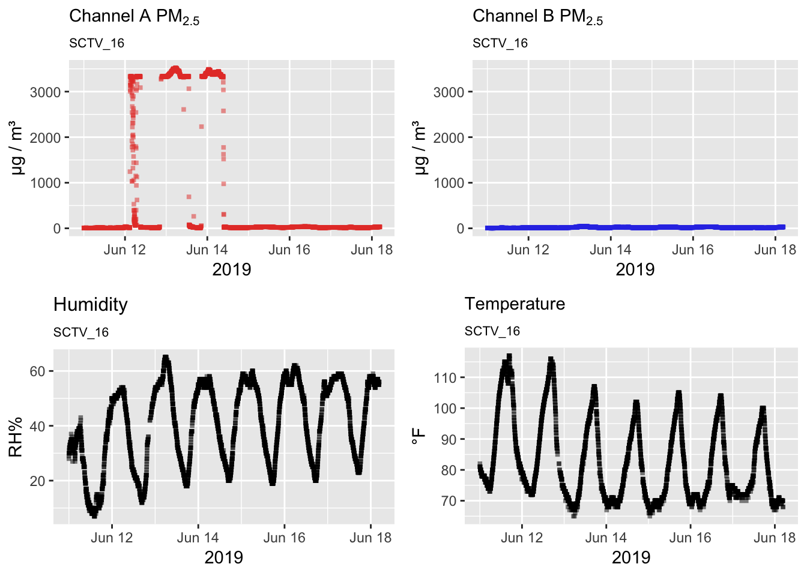
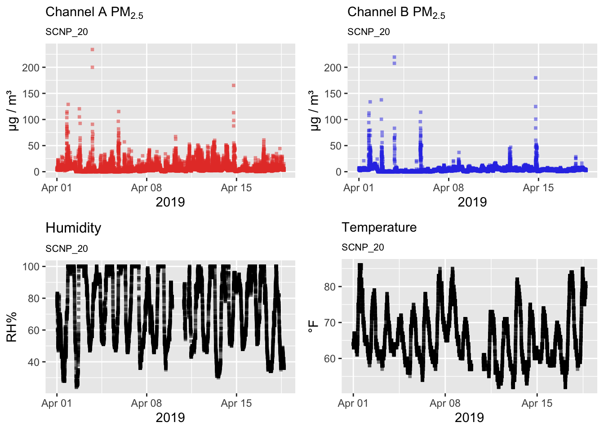
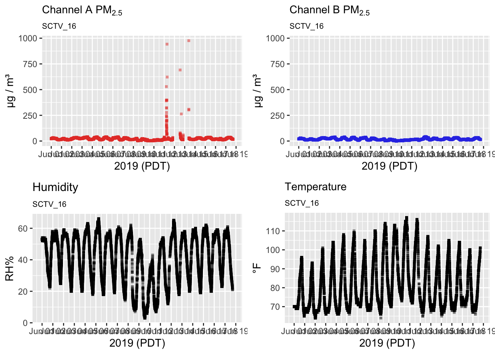
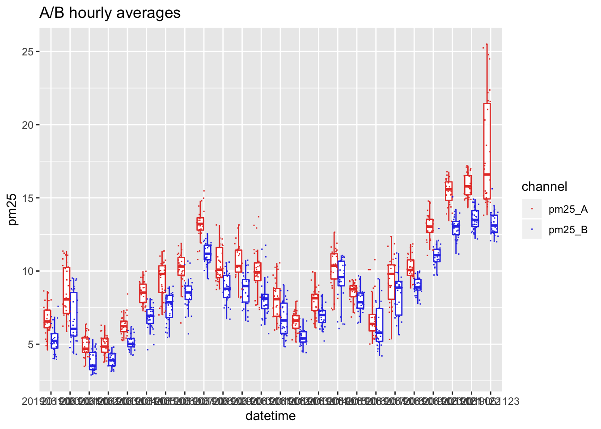
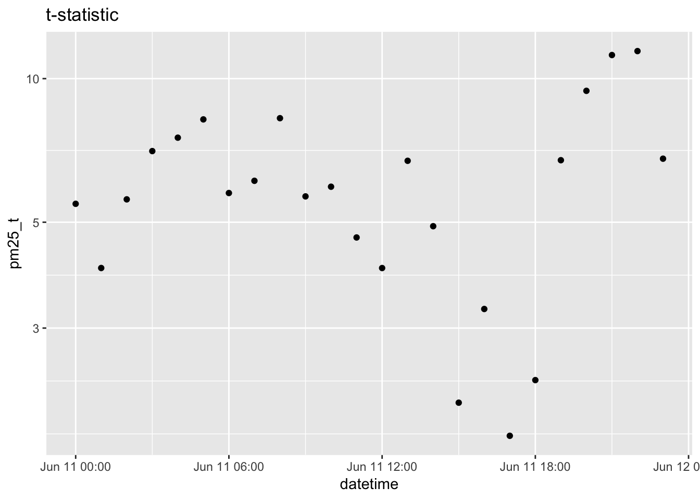
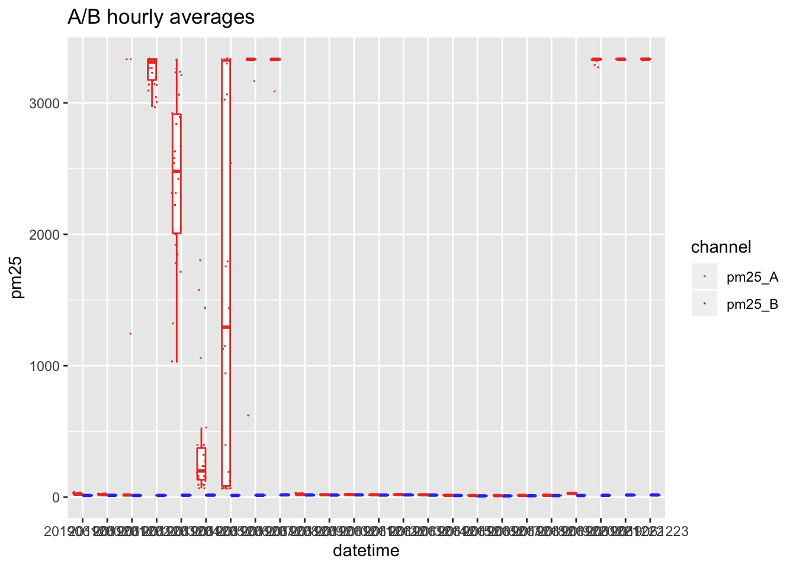
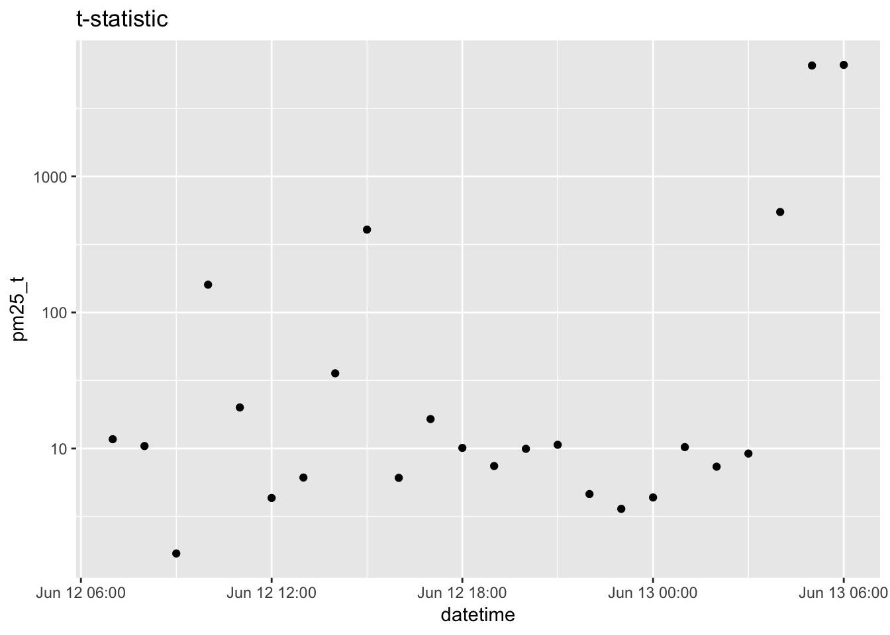
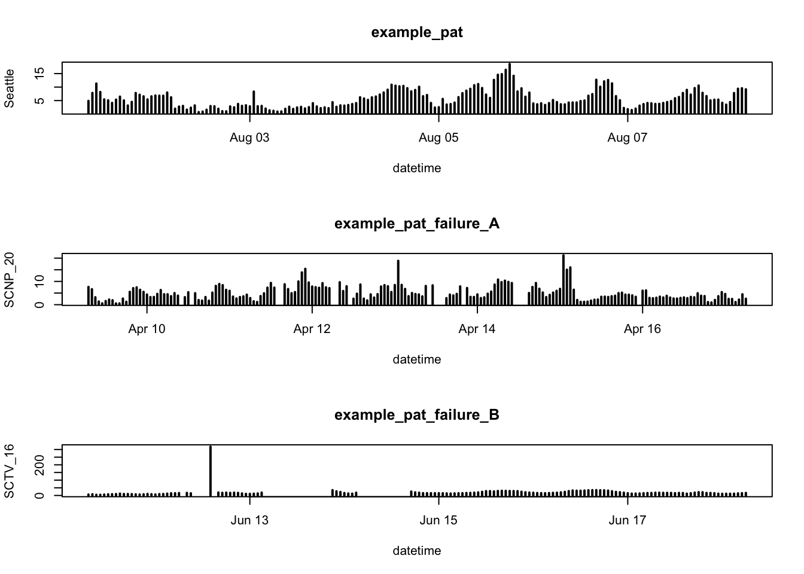

vignettes/purpleair_qc.Rmd
purpleair_qc.RmdThis vignette decribes Quality Control (QC) functions and best practices for working with Purple Air Sensor data.
The AirSensor package pat data model and associated functions make it easy to work with raw Purple Air data. (pat is for Purple Air Timeseries.) Each pat object provides unmodified data obtained from the ThingSpeak database. (ThingSpeak is the Internet of Things data provider that Purple Air has partnered with to handle access to archival data.)
See the pat_introduction vignette for details.
Lets begin by looking at one week’s worth of trouble free sensor data:
pat <- example_pat %>% pat_filterDate(20180701, 20180708)
# use sampleSize = NULL to force display of every data point
pat_multiplot(pat, sampleSize = NULL)
In this case, no obvious errors are seen in the data.
Occasionally one sees aphysical relative humidity values > 100. The example below also shows one of the particle detectors generating noisy data.
data("example_pat_failure_A")
pat <- example_pat_failure_A
# use sampleSize = NULL to force display of every data point
pat_multiplot(pat, sampleSize = NULL)
One of the PM2.5 channels can also report completely bogus data:
data("example_pat_failure_B")
pat <- example_pat_failure_B
# use sampleSize = NULL to force display of every data point
pat_multiplot(pat, sampleSize = NULL)
The examples above demonstrate just two of many possible failure modes but they provide data we can use to develop basic QC algorithms that identify the most egregiously misbehaving data without throwing away potentially interesting outliers.
The least controversial QC is the removal of values that are out-of-spec for the sensor. Purple Air provides PA-II sensor specs which define the valid measurement range for each variable:
0 < humidity < 100
-40 < temperature < 185
0 < pm25 < 1000The pat_qc() function applies these thresholds and returns a pat object where out-of-spec values have been replaced by NA. See how the out-of-spec humidity values get replaced in example_pat_failure_A:
pat <-
example_pat_failure_A %>%
pat_qc()
pat_multiplot(pat, sampleSize = NULL)
The case of example_pat_failure_B is also improved by removing out-of-spec values but some questionable data still exist in channel A:
pat <-
example_pat_failure_B %>%
pat_qc()
pat_multiplot(pat, sampleSize = NULL)
The pat_aggregate() function is used in the conversion of pat data objects into dataframes with a uniform, typically hourly, time axis. The aggregation process invovles creating regular time bins and then calculating a variety of statistics for the data within each bin. We end up with a dataframe with a regular time axis and multiple columns of statistics for each input variable.
Applying our uncontroversial pat_qc() as the first step in the pipeline, we can reivew which statistics are calcualted:
df <-
example_pat_failure_A %>%
pat_qc() %>%
pat_aggregate(period = "1 hour")
class(df)## [1] "data.frame"names(df)## [1] "datetime" "pm25_t" "pm25_p"
## [4] "pm25_df" "pm25_A_mean" "pm25_B_mean"
## [7] "pm25_A_median" "pm25_B_median" "pm25_A_sd"
## [10] "pm25_B_sd" "pm25_A_min" "pm25_B_min"
## [13] "pm25_A_max" "pm25_B_max" "pm25_A_count"
## [16] "pm25_B_count" "humidity_mean" "humidity_median"
## [19] "humidity_sd" "humidity_min" "humidity_max"
## [22] "humidity_count" "temperature_mean" "temperature_median"
## [25] "temperature_sd" "temperature_min" "temperature_max"
## [28] "temperature_count"For each variable, core statistics are calculated for the population of measurements found in each time bin:
Every Purple Air II sensor has two separate particle detectors, each reporting on a separate channel: A and B. When measurements in both channels agree within measurement error then we have higher confidence in the measurements. Because the two particle detectors are so close together we shouldn’t expect any difference in the air entering detector A or B.
The two-sample t-test is the standard statistical technique for determining whether a difference in two means is significant or can be attributed to random processes. The friendliest explanation of this statistical technique is available through a serires of Khan Academy videos
When the Purple Air sensor is functioning properly we expect the hourly average of A channel PM2.5 measurements to be close to the average of B channel PM2.5 measurements. To determine whether this NULL hypothesis holds, the pat_aggregate() function does some additional work for PM2.5 and calculates the following addition two-sample t-test statistics:
For visual thinkers, imagine a boxplot showing the range of values from the A and B channels for a particular hour. If the boxplots overlap, then the means, although not identical, are not significantly different.
A picture may help. Below we display hourly boxplots for the A and B channels during a day when they largely agree:
library(ggplot2)
# Always specify a timezone wherever possible!
timezone <- "America/Los_Angeles"
# Grab a 1-day subset of the data
raw_data <-
example_pat_failure_B %>%
pat_filterDate(20190611,20190612) %>%
pat_extractData() %>%
dplyr::select(datetime, pm25_A, pm25_B) %>%
# Convert datetime to an hourly timestamp to use as a factor
dplyr::mutate(datetime = strftime(datetime, "%Y%m%d%H", tz = timezone)) %>%
# Convert from wide to "tidy" so we can use channel as a factor
tidyr::gather("channel", "pm25", -datetime)
# Look at a random sample of this new dataframe
dplyr::sample_n(raw_data, 10)## datetime channel pm25
## 1 2019061123 pm25_B 12.07
## 2 2019061108 pm25_B 11.87
## 3 2019061100 pm25_A 5.97
## 4 2019061111 pm25_A 9.80
## 5 2019061116 pm25_B 8.35
## 6 2019061114 pm25_A 7.35
## 7 2019061115 pm25_B 9.29
## 8 2019061123 pm25_B 13.12
## 9 2019061118 pm25_B 9.91
## 10 2019061114 pm25_A 8.58# Create a timeseries using boxplots
colors <- c(rgb(0.9, 0.25, 0.2), rgb(0.2, 0.25, 0.9))
ggplot(raw_data, aes(datetime, pm25, color = channel)) +
geom_boxplot(outlier.shape = NA,
show.legend = FALSE) +
scale_color_manual(values=colors) +
geom_point(pch=15, cex=0.2, position = position_jitterdodge()) +
ggtitle("A/B hourly averages")
# Compare the t-statistic for that day
agg_data <-
example_pat_failure_B %>%
pat_filterDate(20190611,20190612) %>%
pat_aggregate()
ggplot(agg_data, aes(datetime, pm25_p)) +
geom_point() +
scale_y_log10() +
ggtitle("t-test p-value")
And here is the same for a day with serious problems:
## datetime channel pm25
## 1 2019061215 pm25_B NA
## 2 2019061207 pm25_B 12.10
## 3 2019061215 pm25_B NA
## 4 2019061210 pm25_A 19.06
## 5 2019061219 pm25_B 12.27
## 6 2019061219 pm25_B 13.04
## 7 2019061201 pm25_A 20.34
## 8 2019061214 pm25_B 16.45
## 9 2019061205 pm25_A 1575.87
## 10 2019061203 pm25_A 3136.34
We can see that the null hypothesis – the difference in means is entirely due to chance – is extremely unlikely pm25_p < 1e-30, for example, only occur for hours where the A and B channels have hourly avergaes that are both highly precise (low std dev) and very different. We can thus use the pm25_t variable to flag those hours where the A and B channels disagree.
One of the most important data products we can create form raw Purple Air data is the hourly avergaged dataset that can be used for comparison with co-located federal regulatory monitors.
The following steps are recommend for creating an hourly PM2.5 timeseries:
(min_count < 10)
(p-value < 1e-4) & (mean_diff > 10)
(pm25 < 100) & (mean_diff > 20)This combination of QC steps is used in when the pat_createAirSensor() function is run with qc_algorithm = "hourly_AB_01".
As a test of the overall effect, here are some simple, hourly barplots for a single week of data for each of the three examples we started with:

Things look pretty good. The first two time seres look quite reasonable given the input data and most of the hours of questionable data have been removed from example_pat_failure_B. The only questionably high value in example_pat_failure_B has values on either side that have been flagged as invalid which should raise questions.
It is beyond the scope of this vignette, but one could imagine further cleanup that removed every value adjacent to an invalid value which would have completely cleaned up the last example.